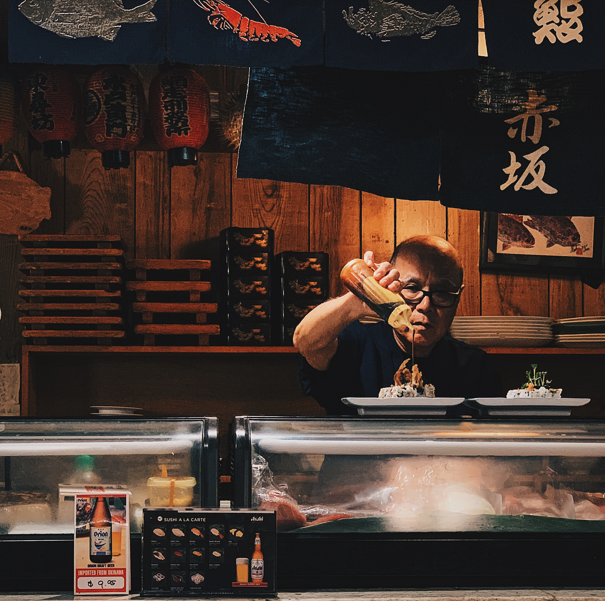
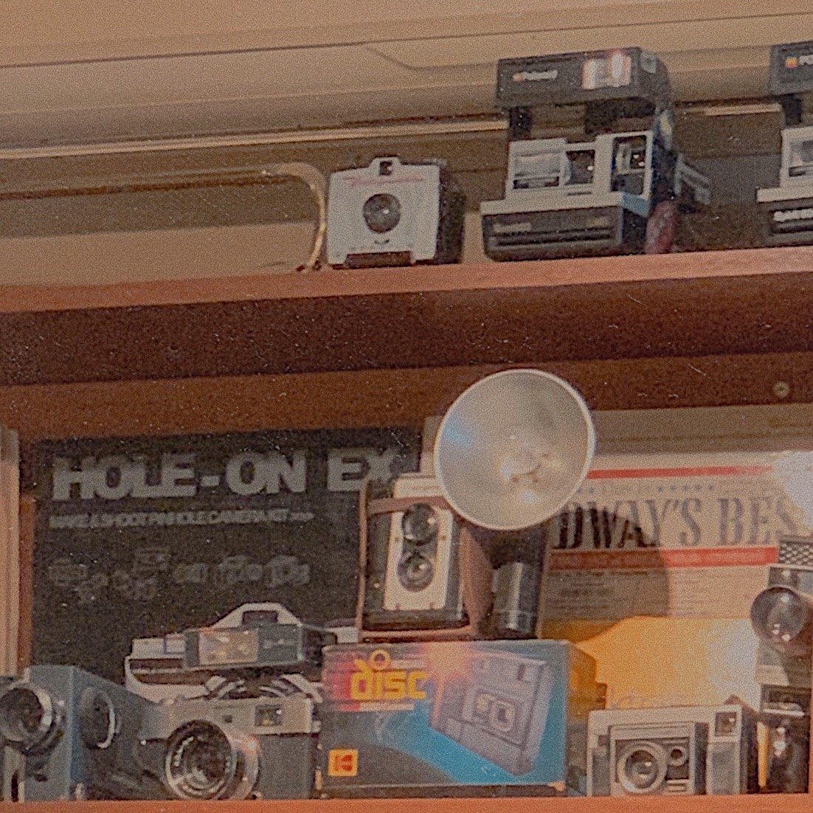
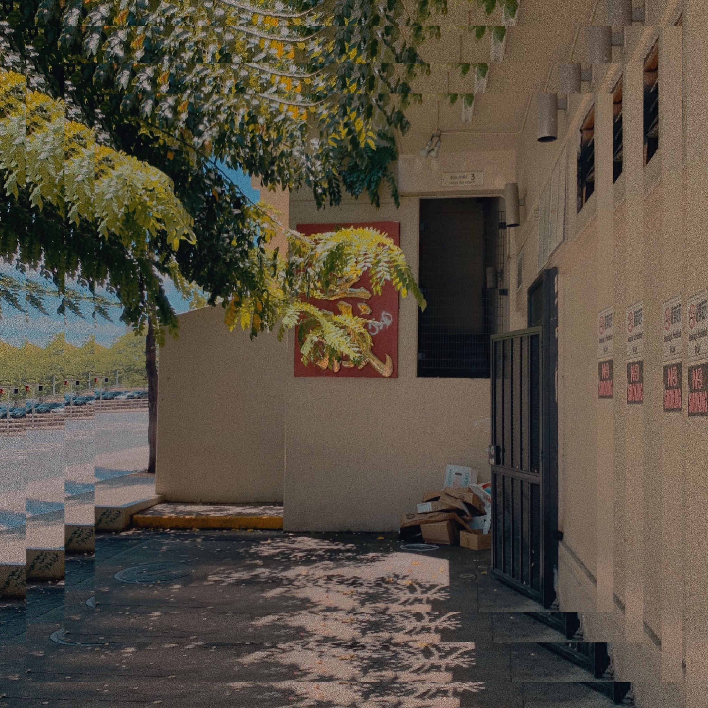
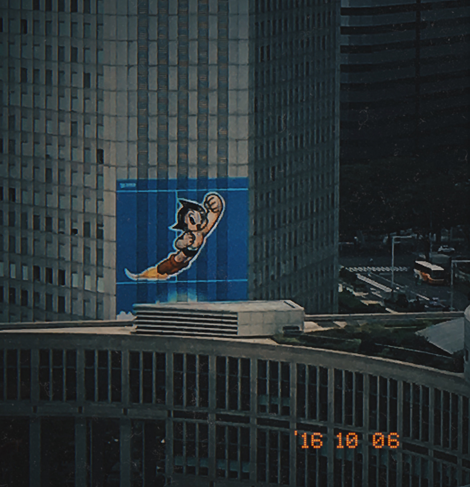
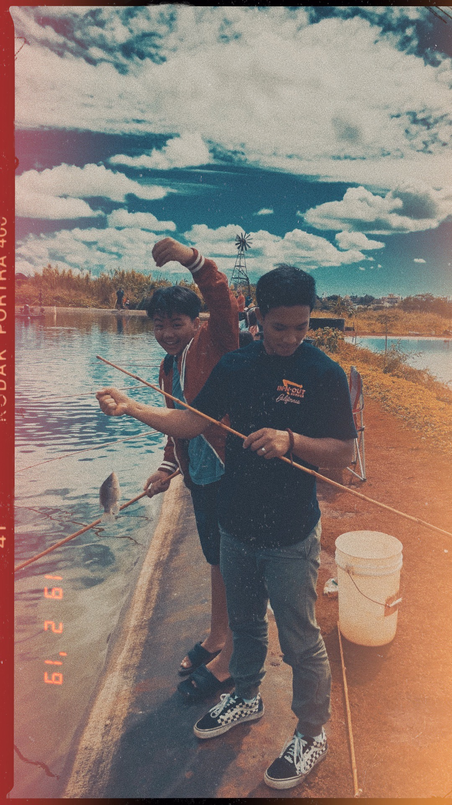
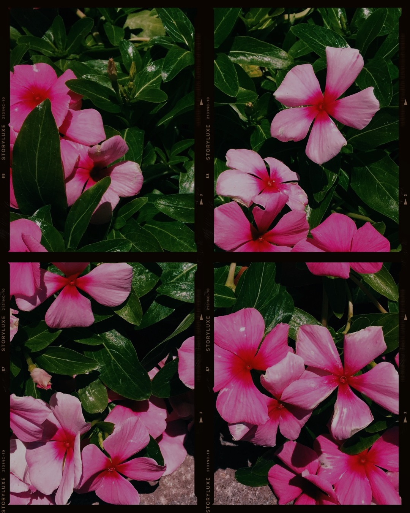

In order to share my passion for photography, I have been using the app VSCO as a portfolio for my work. Here is some examples.
Here are the Photos VSCO reposted
Here are the Photos I personally like
  
  
Heres a link to my VSCO page